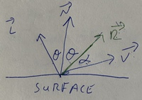
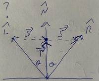

Chapter 13 Phong Reflection Models

Section 13.1 Overview
The color of an object will depend on:
- \(A\text{:}\) The color of ambient light (RGB or a single value [0-255]). e.g. 255, 255, 255 (white)
- \(P\text{:}\) The color of a point light source (RGB or a single value [0-255]). e.g. 255, 0, 255 (magenta)
- \(\overrightarrow{L}\text{:}\) The vector from the surface of an object to a point light source (\(\lt x, y, z>\)). e.g. \(\lt 1, 0.5, 1>\) (to the right, slightly up and in front)
- \(\overrightarrow{V}\text{:}\) The view vector (from the surface of an object to the viewer) (\(\lt x, y, z>\)).e.g. \(\lt 0, 0, 1>\) (directly in front)
- \(\overrightarrow{N}\text{:}\) The surface normal of a polygon, see notes on [backface culling](#backface-culling) for more on this.
- \(K_a\text{:}\) Constant of ambient reflection; how much ambient light is reflected by the object. ( RGB or a single value [0-1], think of it like a %). e.g. 0.1, 0.1, 0.1
- \(K_d\text{:}\) Constant of diffuse reflection; how much a point light is reflected diffusely by the object. ( RGB or a single value [0-1] ). e.g. 0.5, 0.5, 0.5
- \(K_s\text{:}\) Constant of specular reflection; how much a point light is reflected specularly by the object. ( RGB or a single value [0-1] ). e.g. 0.5, 0.5, 0.5
In general, \(I\) (for illumination), or the color of an object based on lighting will be calculated by
\begin{equation*}
I = I_{ambient} + I_{diffuse} + I_{specular}
\end{equation*}
Section 13.2 Ambient Reflection
This is the ambient component of color. It is the easiest to compute since we don’t need to take into account the location of the object or the viewer.
\begin{equation*}
I_{ambient} = AK_a
\end{equation*}
If working in RGB instead of grayscale, you’ll have to compute this separately for each color.
Section 13.3 Diffuse Reflection
This is the diffuse reflection of a point light source. We will need to model the relationship between the light source and the object.  Diffuse reflection is strongest when the surface is pointing directly at the light, and gets weaker as the object points away from the light. Put another way, the diffuse reflection is inversely proportional to \(\theta\text{.}\) This can be modeled with \(cos\theta\text{.}\) Lucky, for us, we already know that \(cos\theta\) is the dot product of the two vectors. Unlike with backface culling, we DO care about the magnitudes, so it is in our best interest to normalize both\(\overrightarrow{N}\) and \(\overrightarrow{L}\text{.}\)
Diffuse reflection is strongest when the surface is pointing directly at the light, and gets weaker as the object points away from the light. Put another way, the diffuse reflection is inversely proportional to \(\theta\text{.}\) This can be modeled with \(cos\theta\text{.}\) Lucky, for us, we already know that \(cos\theta\) is the dot product of the two vectors. Unlike with backface culling, we DO care about the magnitudes, so it is in our best interest to normalize both\(\overrightarrow{N}\) and \(\overrightarrow{L}\text{.}\)
The normalized version of a vector is often shown with a ^ like so: \(\hat{N}\text{.}\) To normalize a vector, divide each component by the magnitude of the original vector. For Vector \(\overrightarrow{A} = \lt x, y, z>\text{,}\) \(M = \sqrt{x^2 + y^2 + z^2}\text{,}\) \(\hat{A} = \lt \dfrac{x}{M}, \dfrac{y}{M}, \dfrac{z}{M}>\text{.}\) Once normalized, we can do: \(cos\theta = \hat{N} \cdot \hat{L}\) Combined with P and Kd, we get:
\begin{equation*}
I_{diffuse} = PK_d(\hat{N} \cdot \hat{L})
\end{equation*}
Section 13.4 Specular Reflection
This is the specular reflection of a point light source. We will need to model the relationship between the light source and the viewer.

Specular reflection is strongest when the reflected light is pointing directly at the viewer. This is inversely proportional to \(\alpha\text{,}\) and can be modeled by \(cos\alpha\text{.}\) What we need is:
\begin{equation*}
cos\alpha = \hat{R} \cdot \hat{V}
\end{equation*}
\(\hat{V}\) is given, but how can we find \(\hat{R}\text{?}\)

Using the above diagram:
\begin{equation*}
\hat{R} = \overrightarrow{T} + \overrightarrow{S}
\end{equation*}
\(\overrightarrow{T}\) is the projection of \(\hat{L}\) onto \(\hat{N}\text{.}\) The result is a vector with the same direction as \(\hat{N}\text{,}\) but with a magnitude scaled by \(\hat{L}\text{.}\)
\begin{equation*}
\overrightarrow{T} = \hat{N}(\hat{N} \cdot \hat{L})
\end{equation*}
Note that while \(\hat{N}\) and \(\hat{L}\) should be normalized, \(\overrightarrow{T}\) will not be (unless \(\alpha = 0\)). Now we know \(\overrightarrow{T}\) in terms of information we already have. \(\overrightarrow{S}\) can be found by doing some similar triangle work.
\begin{equation*}
\begin{aligned}
\hat{L} + \overrightarrow{S} \amp= \overrightarrow{T} \\
\overrightarrow{S} \amp= \overrightarrow{T} - \hat{L} \\
\overrightarrow{S} \amp= \hat{N}(\hat{N} \cdot \hat{L}) - \hat{L}
\end{aligned}
\end{equation*}
Which then gives us:
\begin{equation*}
\begin{aligned}
\hat{R} \amp= \hat{N}(\hat{N} \cdot \hat{L}) + \hat{N}(\hat{N} \cdot \hat{L}) - \hat{L} \\
\hat{R} \amp= 2\hat{N}(\hat{N} \cdot \hat{L}) - \hat{L}
\end{aligned}
\end{equation*}
Using this, we get \(\cos\alpha =[2\hat{N}(\hat{N} \cdot \hat{L}) - \hat{L}] \cdot \hat{V}\text{.}\) Combined with P and Ks we get:
\begin{equation*}
I_{specular} = PK_s([2\hat{N}(\hat{N} \cdot \hat{L}) - \hat{L}] \cdot \hat{V})
\end{equation*}
This doesn’t take into account the fact that specular reflections are supposed to die off quickly. Note that the specular component from the Phong reflection image above is mostly a group of small, bright circles. The simplest way to get this effect is to raise \(cos\alpha\) to some exponenet larger than 1. The specific value will depend on what looks right to you.
\begin{equation*}
I_{specular} = PK_s([2\hat{N}(\hat{N} \cdot \hat{L}) - \hat{L}] \cdot \hat{V})^x
\end{equation*}
Section 13.5 Putting it All Together
\begin{equation*}
\begin{aligned}
I \amp= I_{ambient} + I_{diffuse} + I_{specular} \\
I_{ambient} \amp= AK_a \\
I_{diffuse} \amp= PK_d(\hat{N} \cdot \hat{L}) \\
I_{specular} \amp= PK_s([2\hat{N}(\hat{N} \cdot \hat{L}) - \hat{L}] \cdot \hat{V})^x
\end{aligned}
\end{equation*}
\begin{equation*}
I = AK_a + PK_d(\hat{N} \cdot \hat{L}) + PK_s([2\hat{N}(\hat{N} \cdot \hat{L}) - \hat{L}] \cdot \hat{V})^x
\end{equation*}